Introduction to MDPs
Markov decision processes formally describe an environment for reinforcement learning
Where the environment is fully observable -i.e. The current state completely characterises the process
Almost all RL problems can be formalised as MDPs, e.g.
- Optimal control primarily deals with continuous MDPs
- Partially observable problems can be converted into MDPs
- Bandits are MDPs with one state
Markov Property
“The future is independent of the past given the present”
Definition:
A state \(S_t\) is Markov if and only if \[ \mathbb{P} [S_{t+1} | St ] = \mathbb{P} [S_{t+1}\ |\ S_1, \ldots, S_t ] \]
The state captures all relevant information from the history
Once the state is known, the history may be thrown away
i.e. The state is a sufficient statistic of the future
State Transition Matrix
For a Markov state \(s\) and successor state \(s'\), the state transition probability is defined by
\[ \mathcal{P}_{ss'} = \mathbb{P}[S_{t+1} = s'\ |\ S_t = s] \]
A state transition matrix \(\mathcal{P}\) defines transition probabilities from all states \(s\) to all successor states \(s'\),
\[ \mathcal{P} \;=\; \textit{\textcolor{red}{from}}\; \begin{array}{c} \textit{\textcolor{red}{to}}\\[-0.25em] \left[ \begin{array}{ccc} \mathcal{P}_{11} & \cdots & \mathcal{P}_{1n}\\ \vdots & \ddots & \vdots\\ \mathcal{P}_{n1} & \cdots & \mathcal{P}_{nn} \end{array} \right] \end{array} \]
where each row of the matrix sums to 1.
Markov Process
A Markov process is a memoryless random process, i.e. a sequence of random states \(S_1, S_2, \ldots\) with the Markov property.
Definition
A Markov Process (or Markov Chain) is a tuple \(<\mathcal{S}, \mathcal{P} >\)
\(\mathcal{S}\) is a (finite) set of states
\(\mathcal{P}\) is a state transition probability matrix,
\(\mathcal{P}_{ss'} = \mathbb{P}[S_{t+1} = s'\ |\ S_t = s]\)
Example: Student Markov Chain
Example: Student Markov Chain Episodes
Sample episodes for Student Markov Chain (starting from \(S_1 = C1\)): \(S_1; S_2; \ldots, S_T\)
C1 C2 C3 Pass Sleep
C1 In In C1 C2 Sleep
C1 C2 C3 Bar C2 C3 Pass Sleep
C1 In In C1 C2 C3 Bar C1 In In In C1 C2 C3 Bar C2 Sleep
Example: Student Markov Chain Transition Matrix
\[ \tiny \mathcal{P} = \begin{bmatrix} & \textit{C1} & \textit{C2} & \textit{C3} & \textit{Pass} & \textit{Bar} & \textit{In} & \textit{Sleep} \\ \textit{C1} & & 0.5 & & & & 0.5 & \\ \textit{C2} & & 0.8 & & & & & 0.2 \\ \textit{C3} & & & & 0.6 & 0.4 & & \\ \textit{Pass} & & & & & & & 1.0 \\ \textit{Bar} & 0.2 & 0.4 & 0.4 & & & & \\ \textit{In} & 0.1 & & & & & 0.9 & \\ \textit{Sleep} & & & & & & & 1 \end{bmatrix} \normalsize \]
Markov Reward Processes
A Markov reward process is a Markov chain with values.
Definition
A Markov Reward Process is a tuple \(< \mathcal{S}, \mathcal{P}, \mathcal{\textcolor{red}{R}}, \textcolor{red}{\gamma} >\)
\(\mathcal{S}\) is a finite set of states
\(\mathcal{P}\) is a state transition probability matrix, \(\mathcal{P}_{ss'} = \mathbb{P}[S_{t+1} = s'\ |\ S_t = s]\)
\(\color{red}{\mathcal{R}}\) is a reward function, \(\color{red}{\mathcal{R}_s = \mathbb{E}[R_{t+1}\ |\ S_t = s]}\)
\(\textcolor{red}{\gamma}\) is a discount factor, \(\color{red}{\gamma \in [0, 1]}\)
Example: Student MRP
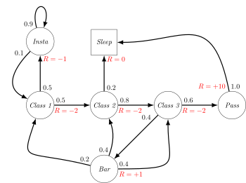
Return
Definition The return \(G_t\) is the total discounted reward from time-step \(t\). \[ G_t \;=\; R_{t+1} \;+\; \gamma R_{t+2} \;+\; \dots \;=\; \sum_{k=0}^{\infty} \gamma^k R_{t+k+1} \]
\[ G_t \;=\; R_{t+1} \;+\; \gamma R_{t+2} \;+\; \dots \;=\; \sum_{k=0}^{\infty} \gamma^k R_{t+k+1} \]
The discount \(\gamma \in [0, 1]\) is the present value of future rewards
The value of receiving reward \(R\) after \(k+1\) time-steps is \(\gamma^k R\).
This values immediate reward above delayed reward
\(\gamma\) close to \(0\) leads to “myopic” evaluation
\(\gamma\) close to \(1\) leads to “far-sighted” evaluation
Why discount?
Most Markov reward/decision processes are discounted, why?
Mathematically convenient to discount rewards
Avoids infinite returns in cyclic Markov processes
Uncertainty about the future may not be fully represented
If the reward is financial, immediate rewards may earn more interest than delayed rewards
Animal/human behaviour shows preference for immediate reward
Most Markov reward/decision processes are discounted, why?
- It is sometimes possible to use undiscounted Markov reward processes (i.e. \(\gamma = 1\)), e.g. if all sequences terminate.
Value Function
The value function \(v(s)\) gives the long-term value of state s
Definition
The state value function \(v(s)\) of an MRP is the expected return starting from state \(s\)
\[ v(s) = \mathbb{E}[G_t\ |\ S_t = s] \]
Example: State-Value Function for Student MRP (1)
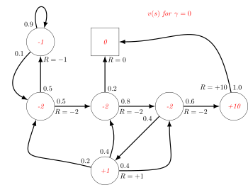
Example: State-Value Function for Student MRP (2)
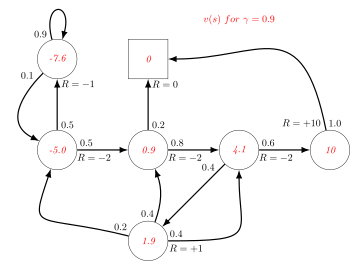
Example: State-Value Function for Student MRP (3)
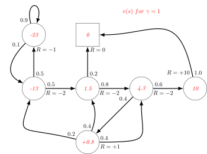
Example: Bellman Equation for Student MRP
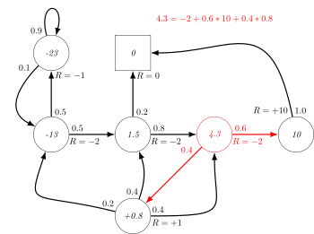
Markov Decision Processes
Example: Student MDP
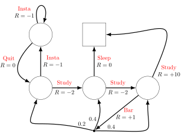
Example: State-Value Function for Student MDP
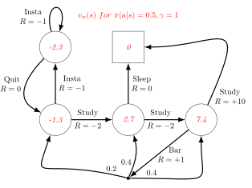
Example: Bellman Expectation Equation in Student MDP
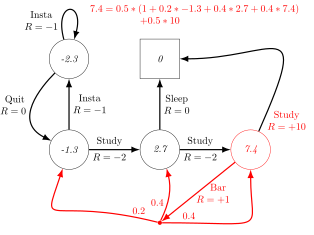
Example: Optimal Value Function for Student MDP
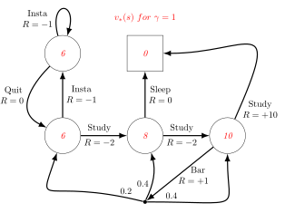
Example: Optimal Action-Value Function for Student MDP
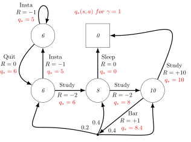
Example: Optimal Policy for Student MDP
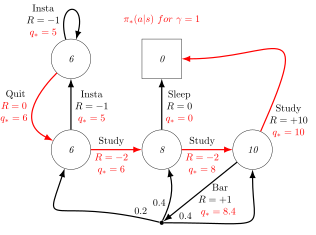
Example: Bellman Optimality Equation in Student MDP
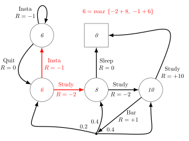